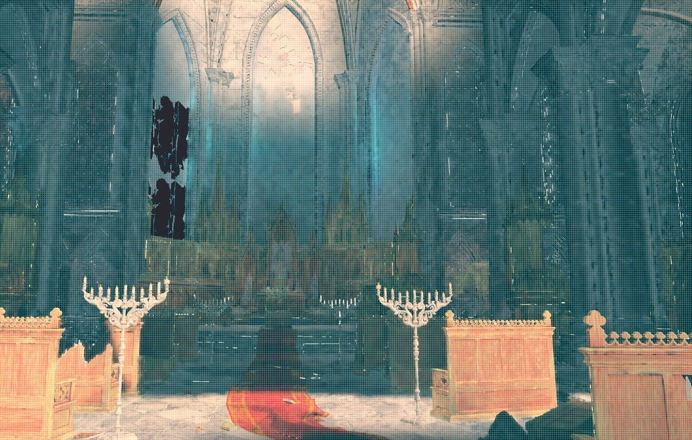
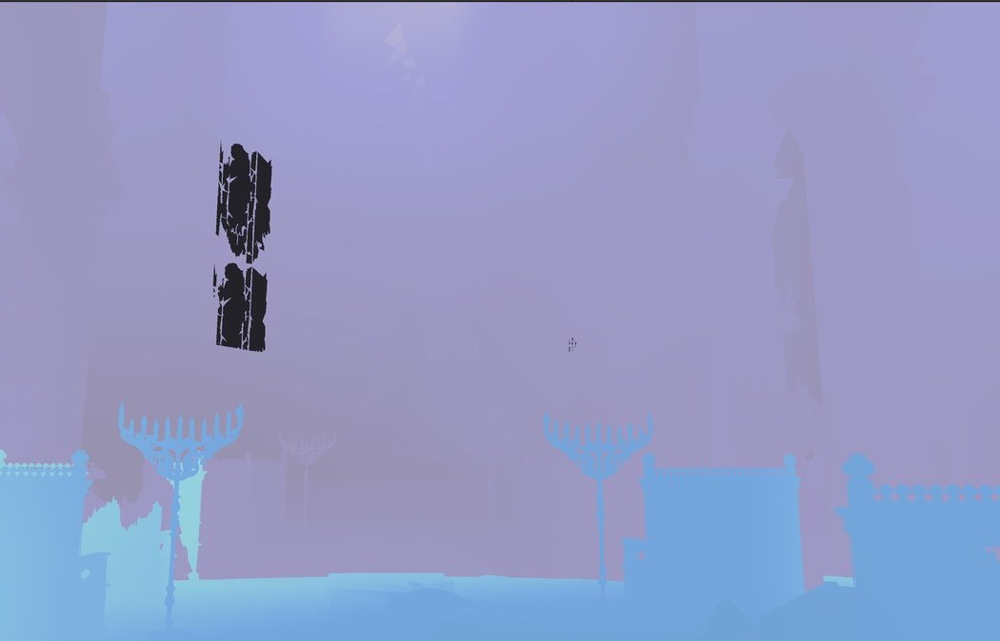
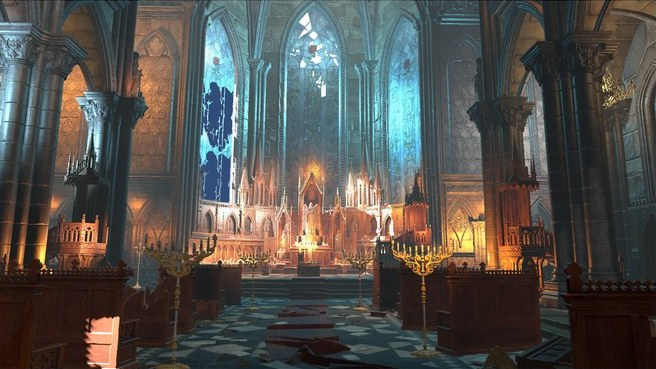
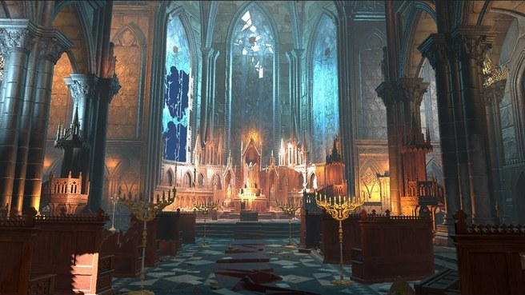
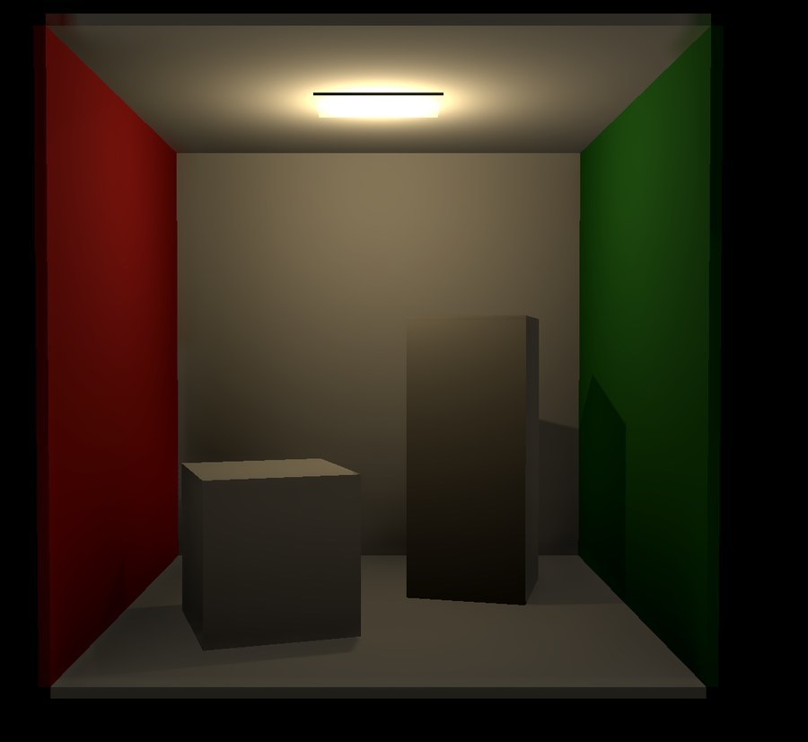
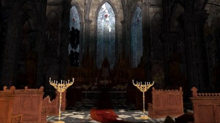
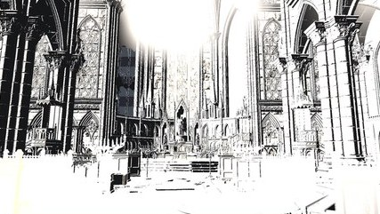
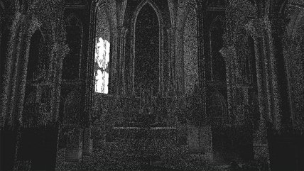

近处细节：网格距离场烘焙
Baker 在每个 voxel 上遍历三角形求最近距离，并累加立体角 winding 判断内外，结果写入 Texture3D。
Featured 02 — Real-Time Global Illumination
在 Unity URP Deferred 上重构的一套实时 GI 管线。不复制某个单独算法，而是复刻 Lumen 的系统思路： 屏幕空间先行，距离场兜底，缓存复用辐射，时域稳定画面。

Lumen 的价值不在某个单点技巧，而在于把实时全局光照改写成一套采样预算管理系统： 优先使用便宜且已有的数据，把几何和辐射压缩成可查询的表达，用置信度决定是否 fallback， 再通过时域复用把结果扩展到下一帧。
Screen Trace、SDF、Surface Cache、Probe 与 Temporal 不是互相竞争的方案，而是不同层级的“采样减少器”。
Depth / Normal / Motion / Material，提供可见表面。
用屏幕深度廉价获得第一层命中。
置信度不足时，补足屏幕外几何。
命中后查询 card atlas，不再重新着色。
Screen / World Probe 共享低频光照。
重投影、验证、clamp，把采样摊到多帧。
自定义 GI 以 ScriptableRendererFeature 注入 URP Deferred，直接复用 Depth、Motion 与 GBuffer。
SSRT 优先命中屏幕内几何；命中失败或置信度过低时切换到 SDF hybrid，减少空射和屏幕边缘漏光。
trace = TraceSSRT(...);
if (trace.hit < 0.5h || trace.confidence < 0.22h)
trace = TraceSDFHybrid(...);Baker 在每个 voxel 上遍历三角形求最近距离，并累加立体角 winding 判断内外，结果写入 Texture3D。
以相机为中心 snapping 的 3 级 clipmap，把多个对象合成全局距离场；先用 expanded AABB 粗剔除，再取最小距离。
closest = ClosestPointOnTriangle(samplePoint, a, b, c);
minDistSq = min(minDistSq, dot(delta, delta));
signedDist = winding > insideThreshold
? -sqrt(minDistSq)
: sqrt(minDistSq);Surface Cache 解决的不是“怎么求交”，而是“求交以后怎么办”。每次命中都重新执行材质、阴影和多次反弹， GI 成本会重新爆炸；把这些结果预先捕获到 atlas 中，命中后只需采样。
if (!objectStatus.hasCards || objectStatus.age > maxAge)
return false;
for (card in objectCards) {
if (dot(hitNormal, cardNormal) < normalThreshold) continue;
faceUV = ProjectToCardUV(hitPosition, cardBasis);
score = normalDot - planePenalty * 0.15;
atlasUV = (tileOrigin + clamp(faceUV, inset, 1 - inset)) / tilesPerRow;
}屏幕划成稀疏 probe 网格，方向辐射以 octahedral atlas 与 SH-L1 存储。质量预设用 probe spacing 与 octahedral 分辨率，在空间密度和方向密度之间分配预算。
相机周围的 3D radiance grid，snapping 保持空间稳定，按 updateBudget 逐帧刷新；混合上一轮 voxel radiance、天空光与 probe history 作为 miss 兜底。
World SDF 也被扩展成带辐射的 clipmap：只有落在表面带内的 voxel 写入 radiance， 并读回上一轮结果形成受限的多次反弹近似。
signedDistance = min(sourceDistance over culled sources);
WorldSDF[id] = clamp(signedDistance, -maxDistance, maxDistance);
if (abs(signedDistance) <= radianceBand)
VoxelRadiance[id] = DirectRadiance
+ Albedo * PreviousRadiance * bounceGain;

GI 以低分辨率、每像素 1–4 条射线计算，再靠时域累积压低噪声。历史帧不是简单混回： 先用 motion vector 重投影，再用 depth / normal 判断有效性，最后用邻域 clamp 防止错误历史扩散， 之后经 bilateral filter 上采样回相机分辨率。
historyUV = currentUV - motionVector;
valid = inside && depthClose && normalClose;
history = ClampHistoryToRawNeighborhood(history);
GI = lerp(currentGI, historyGI, historyWeight * valid);





射线起点贴近表面导致自命中。起点沿法线偏移，并在 SSRT 中加入 thickness、facing 与 edge fade 验证。
近零缩放对象产生不可逆矩阵，SDF 查询出现 NaN。扫描时跳过退化变换，shader 中增加 NaN / Inf 防御。
候选体同分排序不稳定，纹理数组 slot 帧间跳动。改为按 Score + InstanceID 做确定性排序。
SSRT 看不到屏幕外几何。低置信命中统一进入 TraceSDFHybrid fallback。